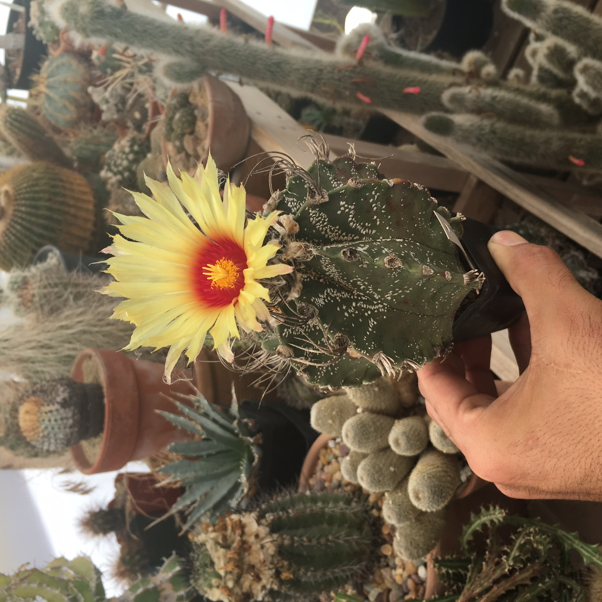

Super Kabuto 7-7-7 is one of the few professional-grade cactus and succulent fertilizers on the market, now available to the public for the first time. This specialized formula, long rumored to be the fertilizer of choice in Japan’s top greenhouses, is the result of extensive research and real-world experimentation by growers and collectors worldwide.

Why fertilize? Fertilization during the growing season is a fundamental part of keeping your plants healthy, just as much as giving them sunshine and water. Super Kabuto provides your cactus with the highest quality minerals to promote flower production & “super natural” growth.
All plants require the macronutrients Nitrogen, Phosphorus, and Potassium. Fertilizers for different plants contain varying ratios of these compounds, where the number corresponds to the ratio of the compound per weight. Super Kabuto 7-7-7 contains a balanced 7% Nitrogen, 7% Phosphorus, and 7% Potassium, which is the optimal balance for cacti.
Nitrogen comes in three forms: ammonium, nitrate, and urea. Kabuto’s Nitrogen content comes from Ammonium (NH4) and Nitrate (NO3) and is Urea-free. Urea is typically used in fertilizers as a cheap and dense nitrogen source. Due to the dangers of increasing soil acidity and burn potential, as well as the absence of soil bacteria in dryer soil mixes, Urea is not recommended as an ingredient in fertilizer for cacti.
Ammonium is metabolized in the roots, while Nitrate is transported to the leaves and body of the plant – both components are key to healthy growth.
In addition the three main macronutrients, plants also require a trace amount micronutrients, including Calcium, Magnesium, Sulphur, Iron, and Cobalt. These are typically found naturally in soil, and aren’t included in many consumer fertilizers. Kabuto provides all these necessary nutrients plants need, allowing cacti to grow even in hydroponic or inorganic growth mediums.
Keep out of direct sunlight and freezing temperatures.
A product by the Cactus Store.
For questions or wholesale:
plantman@super-kabuto.com
(213)-947-3009
Certified by California Dept of Food and Agriculture.
Designed and Manufactured in California.